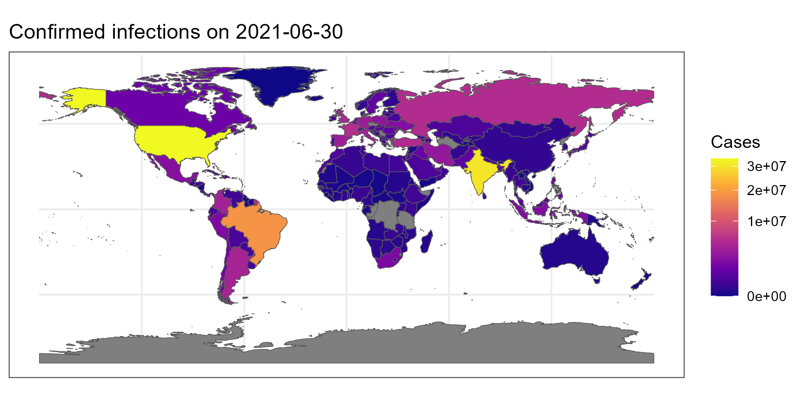

Day 3 Graphics with ggplot2
A demonstration of one of the many specialized plotting routines offered by ggplot2.
Total video length: … min.
Exercise length: 30–90 min.
Can you plot the number of COVID-19 infections across the world on a specific day using just plot, lines, points, text and polygon? Of course… but it would probably take a very long time. If you install the following specialized packages:
install.packages("COVID19")
install.packages("ggplot2")
install.packages("rgeos")
install.packages("rnaturalearth")
install.packages("rnaturalearthdata")
install.packages("sf")Here is how you could do that with ggplot2:
# Load package required for easy access to COVID-19 data
library("COVID19")
# Load packages required for easy access to Earth data
library("rnaturalearth")
library("rnaturalearthdata")
library("sf")
# Load ggplot2 and set background to white
library("ggplot2")
theme_set(theme_bw())
# Load Earth data from rnaturalearthdata package
Earth <- ne_countries(scale = "medium", returnclass = "sf")
# Load COVID-19 data for a specific date
COVID19 <- covid19()
maxc <- max(COVID19$confirmed, na.rm = TRUE) # maximum number of cases
date <- "2021-06-30"
Cases <- COVID19[COVID19$date == date, ]
# Data cleaning
countries <- Cases$administrative_area_level_1
countries[countries == "United States"] <- "United States of America"
countries[countries == "Korea, South"] <- "South Korea"
countries[countries == "Cote d'Ivoire"] <- "Ivory Coast"
# Match the confirmed cases to the list of countries in the Earth data
wh <- match(Earth$admin, countries)
Earth$Cases <- Cases$confirmed[wh]
# Plot the data
ggplot(data = Earth) + geom_sf(aes(fill = Cases)) +
scale_fill_viridis_c(limits = c(0, maxc), option = "plasma", trans = "sqrt") +
ggtitle(paste("Confirmed infections on", date))Provided you have the latest version of R installed and the required packages were installed correctly, this will return the following:

Using less than 50 lines of code, we now have a script that generates a world map colored by the number of infections on a particular day.
3.1 Exercises
If you get stuck on any of the exercises, you can watch the video below to get unstuck. In case of installation problems, contact one of the supervisors or assistants, or work together with a student who has successfully installed the packages.
- Install the required packages and run the script to reproduce the figure.
- Look at the legend. What does “3e+07” mean?
- Read through the script. Can you change the figure to show the number of infections one month earlier? (Hint: Only one line in the code needs to be changed.)
- Delete
, trans = "sqrt"from the script and run it again. What did this part do, and why would that be desirable? (You may restore the original script after this.) - Delete the entire second to last line from the script. What did this line do? (You may restore the original script after this.)
- Essentially,
ggplotworks like this:ggplot(dataset) + whattoshow() + extraoption1() + extraoption2 + ...
Add the following to theggplotchain in the script:+ coord_sf(xlim = c(-10, 35), ylim = c(35, 70))
Run the script again. What does this do? - Can you change the
xlimandylimvalues from the previous question to center the map around Africa? - Go to the github page for the
viridispackage. What is the point of this package? - Can you change the
ggplotpart of our script to use a different color scheme? (Hint: We are already using one of the viridis color schemes, so you only have to change something, not add anything new.) - If you click on
Earthin the environment pane, or if you runView(Earth)in the console, you can see all the variables stored in theEarthdata set. Can you change the original script to show the population estimates instead of the number of infections?
[video explaining the script to be included]
3.2 Extra: Data Cleaning (*)
If you have time left, you can try and complete the additional exercises here.
The COVID-19 and Earth data sets use different names for countries. So how did I know what names to replace with what?
You could simply print both lists of countries and manually look for names that are written differently in both data sets:
# Country names in the Earth data set
Earth$admin
# Country names in the COVID-19 data set
countriesBut these commands will return lists of over 200 countries… A much easier way is to simply look at which countries were unavailable after the matching step. For example:
countries <- Cases$administrative_area_level_1
wh <- match(Earth$admin, countries)
Earth$admin[is.na(wh)]## [1] "Aruba"
## [2] "Anguilla"
## [3] "Aland"
## ... (49 countries omitted for brevity)
## [53] "United States of America"
## [54] "Vatican"
## [55] "British Virgin Islands"
## [56] "United States Virgin Islands"
## [57] "Wallis and Futuna"This gives us a list of only the countries in the Earth data set that were not matched. Here we see that, for instance, "United States of America" was not matched to the COVID-19 data, even though we know there were large number of cases in the US.
The next step is to see how this country is called in the other data set. Again, you could just look at all the names in the variable countries, but how about we only check countries which name contains a capital letter “U”:
# Countries in the COVID-19 data set with a capital letter U
countries[grep("U", countries)]## [1] "United Kingdom" "Virgin Islands, U.S."
## [3] "United States of America" "Uruguay"
## [5] "Uganda" "Uzbekistan"
## [7] "United Arab Emirates" "Ukraine"# Countries in the Earth data set with a capital letter U
Earth$admin[grep("U", Earth$admin)]## [1] "United Arab Emirates" "United Kingdom"
## [3] "United Republic of Tanzania" "Uganda"
## [5] "Ukraine" "Uruguay"
## [7] "United States of America" "Uzbekistan"
## [9] "United States Virgin Islands"Here we see the problem: In the COVID-19 data set, the US is called "United States", whereas in the Earth data set it is called "United States of America".
The solution is to overwrite the name so they are both the same:
countries[countries == "United States"] <- "United States of America"And like that, you can check all the unmatched countries for perhaps other names they might be known by.
Here is another example:
# Countries containing "Congo" in the COVID-19 data set
countries[grep("Congo", countries)]## [1] "Congo"
## [2] "Congo, the Democratic Republic of the"# Countries containing "Congo" in the Earth data set
Earth$admin[grep("Congo", Earth$admin)]## [1] "Democratic Republic of the Congo" "Republic of Congo"- As you can see above, the two Congos have different names in either data set. Read the original script carefully. Add what you think is necessary to color the two Congos as well. To see if it works, simply run the script again to produce the (new) figure.
- Using the method described above, can you color any other countries which are now grey? (Hint: Some countries do not have any data on confirmed cases, like Turkmenistan and North Korea. You can leave these uncolored.)